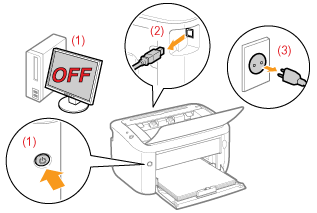

|
OSTRZEŻENIE
|
|
Drukarki nie należy instalować w pobliżu alkoholu, rozcieńczalników do farb lub innych substancji łatwopalnych. Kontakt substancji łatwopalnych z częściami elektrycznymi wewnątrz drukarki może spowodować pożar lub porażenie prądem.
Na drukarce nie należy umieszczać wymienionych poniżej przedmiotów.
Naszyjniki i inne przedmioty metalowe
Filiżanki, wazony, doniczki i inne naczynia napełnione wodą lub płynami
Kontakt tych przedmiotów z elementami pod wysokim napięciem wewnątrz drukarki może spowodować pożar lub porażenie prądem.
Jeśli którykolwiek z wymienionych przedmiotów/substancji dostanie się do wnętrza drukarki, należy natychmiast wyłączyć drukarkę (1) i odłączyć kable interfejsu, jeśli są one podłączone (2). Następnie należy wyjąć wtyczkę przewodu zasilania z gniazdka zasilania prądu przemiennego (3) i skontaktować się z lokalnym autoryzowanym przedstawicielem firmy Canon.
 |
|
PRZESTROGA
|
|
Nie należy instalować drukarki w niestabilnych miejscach, takich jak chwiejne platformy lub pochyłe powierzchnie lub w miejscach narażonych na działanie nadmiernych drgań, gdyż może to spowodować upadek lub przewrócenie się drukarki i w efekcie obrażenia ciała.
Szczeliny wentylacyjne zapewniają właściwą wentylację wnętrza drukarki. Nie należy umieszczać drukarki na miękkiej powierzchni, takiej jak łóżko, kanapa czy dywan. Blokowanie szczelin wentylacyjnych może spowodować przegrzanie drukarki i pożar.
Nie należy instalować drukarki w poniższych lokalizacjach ze względu na ryzyko wywołania pożaru lub porażenia prądem.
Miejsce wilgotne lub zapylone
Miejsce narażone na działanie dymu lub pary, na przykład w pobliżu kuchenki lub nawilżacza powietrza
Miejsce narażone na opady deszczu lub śniegu
Miejsce w pobliżu kranu lub wody
Miejsce narażone na bezpośrednie działanie promieni słonecznych
Miejsce narażone na wysokie temperatury
Miejsce w pobliżu otwartego ognia
W czasie instalowania drukarki należy delikatnie postawić urządzenie w przeznaczonym dla niego miejscu tak, aby nie przycisnąć dłoni między drukarką a podłożem lub między drukarką a innym wyposażeniem, ponieważ może to spowodować obrażenia ciała.
Przy podłączaniu kabla interfejsu, należy przestrzegać zaleceń podanych w e-Podręczniku. Jeśli nie zostanie on prawidłowo podłączony, może spowodować awarię lub porażenie prądem elektrycznym.
Przy przenoszeniu drukarki należy postępować zgodnie z instrukcjami z e-Podręcznika na temat prawidłowego trzymania urządzenia. Nieprzestrzeganie tych instrukcji może doprowadzić do upuszczenia drukarki i w efekcie obrażenia ciała.
 "Przenoszenie drukarki" "Przenoszenie drukarki" |